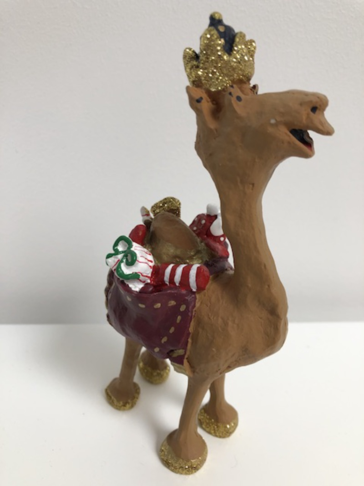

Apache Camel 3.4 is the first LTS (Long Term Support) release of Camel 3.
This release will be actively supported with regular patch releases containing important bug and security fixes for 1-year.
For more details about LTS vs non-LTS releases see this blog post.
So what’s in this release?
This release is mostly about robustness and bug fixes.
We have also continued the work to make Camel more modular and lighter. This time we removed the dependency on JAXB in the Swagger and OpenAPI modules. This helps Camel on GraalVM and native compilation as JAXB is a heavy piece of stack, allowing GraalVM to eliminate it more easily.
We continued to remove usage of reflection in Camel and found a few spots more where reflection was in use, when configuring nested options.
We also added back support for configuring duration values using the shorthand syntax, such as timeout=30000 can be specified as timeout=30s. We had to remove this in earlier versions of Camel 3 due to optimizations. But for Camel 3.4 we found a new way.
Supervising route controller
The work on the supervising route controller is complete. When Camel starts up the default route controller is handling starting the routes safely. The default strategy is that if a route fails to startup then Camel itself will also fail its startup (fail fast).
The supervising route controller is a different strategy that allows to startup routes independent from Camel itself. This new controller will startup the routes using a background task that can reschedule routes that have failed to startup to retry starting (with backoff).
We have provided an example using camel-main or camel-spring-boot which you can find here and here.
You can find more details in the Route Controller documentation.
Health Check
We have reworked Camel’s health-check, to work similar across runtimes, whether its standalone, Spring Boot, Camel-K, or Quarkus.
We also introduced the concept of readiness and liveness so a health check can be either one or both. Each health check can be configured, from application.properties the same way, and it’s all reflection free.
The previously mentioned examples also comes with health-check so make sure to check those. See more details in the Health Check documentation.
Endpoint DSL
The Endpoint DSL had a number of annoying bugs fixed and other improvements. It is now also easier to use Endpoint DSL to configure endpoints in POJOs as Java fields in a type-safe manner, by using FluentProducerTemplate and in RouteBuilder classes as in this example:
public class MyPojo {
@Produce
private FluentProducerTemplate producer;
private final EndpointProducerBuilder mqtt = paho("sensor").clientId("myClient").userName("scott").password("tiger");
public void sendToSensor(String data) {
producer.withBody(data).to(mqtt).send();
}
}
You can read more in the manual about Endpoint DSL and the Component DSL.
Spring Boot
This release supports Spring Boot 2.3.
New Components
This release also adds two new components:
- AWS2 Athena
- RestEasy
Other Changes
A new maven plugin called camel-component-maven-plugin has been added which intents to help third party component developers to generate all required metadata and configurations Java files. For more info on how to use it in your project, please take a look at the Camel Component Plugin documentation.
You can now configure Camel’s thread pool (profiles) and Saga/LRA the same way for standalone, Camel K, Camel Quarkus, and Spring Boot.
Some of the components (more to come in the future) we have moved initialization logic to an earlier phase when possible which allows these components to initialize at build time, which makes Camel startup faster (especially for GraalVM or Quarkus runtimes).
For users that are upgrading to this release, then make sure to follow the upgrade guide.